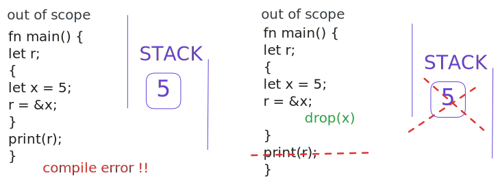

Brieft introduction to Rust
ThongDinh -ft- DatDinh
Contents
- Get to know Rust
- History of Rust
- Notable features
- How Rust invovles in our world
- Get dive deeper to know Rust
- Why Rust is memory safety
- Why Rust is fast
Take away 1:
- Pros: memory safe speed
- Cons: hard to learn cost time to compile
Memory unsafety in C/C++
- Dangling pointers: accessing memory after freeing
- Double free: freeing the same memory twice.
- Memory leaks: never freeing memory.
- Data Races in Multithreading
- Buffer Overflows / Out-of-Bounds Access
Garbage Collection in Java
- Automatically finds and removes unused objects in the heap.
- Pros:
- Ease of Development
- Platform Independence.
- Cons:
- Unpredictable Pauses
- CPU Overhead
- Bloat: extra memory for GC
How Rust archives memory safety

How Rust archives memory safety
- Ownership model
- Lifetimes
- Communicate threads for sharing data
Ownership model
- Enforce safety at compile time by RULES
- reference and mutable-reference
- Value can only be edited from 1 point
Ownership model
Lifetime

Multithread
- “Do not communicate by sharing memory instead, share memory by communicating.”
Multithread
Speed
- Build to native machine code --> fast ~ C/C++
- No GC -> faster than Java, Go, Python
- Zero-cost abstraction (same as C++)
- Optimized LLVM Backend (compiler)
- Support concurrent programming
Speed benchmark vs C
https://programming-language-benchmarks.vercel.app/c-vs-rust
Speed benchmark vs GO
- https://markaicode.com/rust-vs-go-performance-benchmarks-microservices-2025/?utm_source=chatgpt.com
Q & A
Thank you !!!